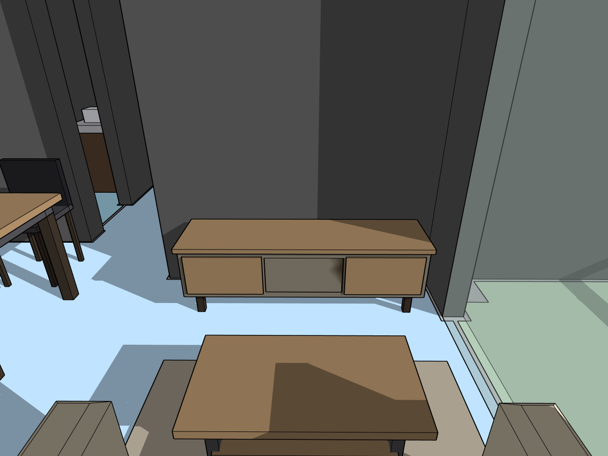
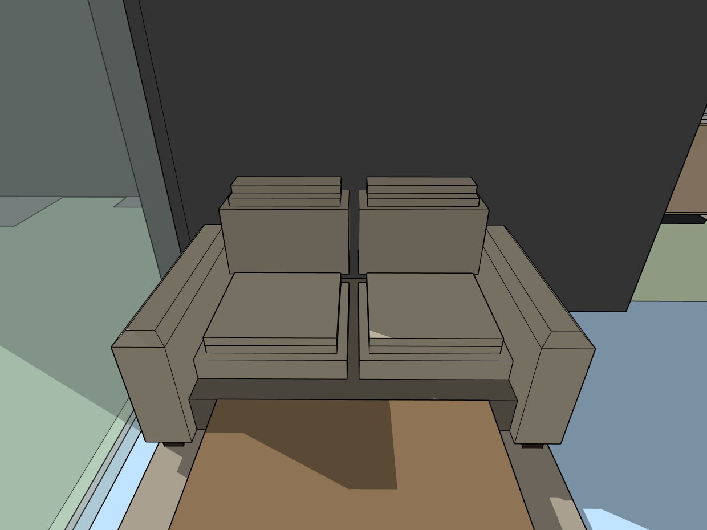
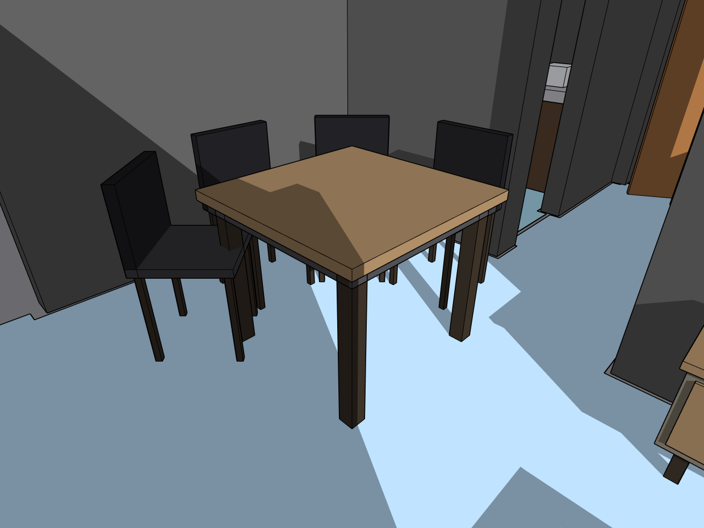
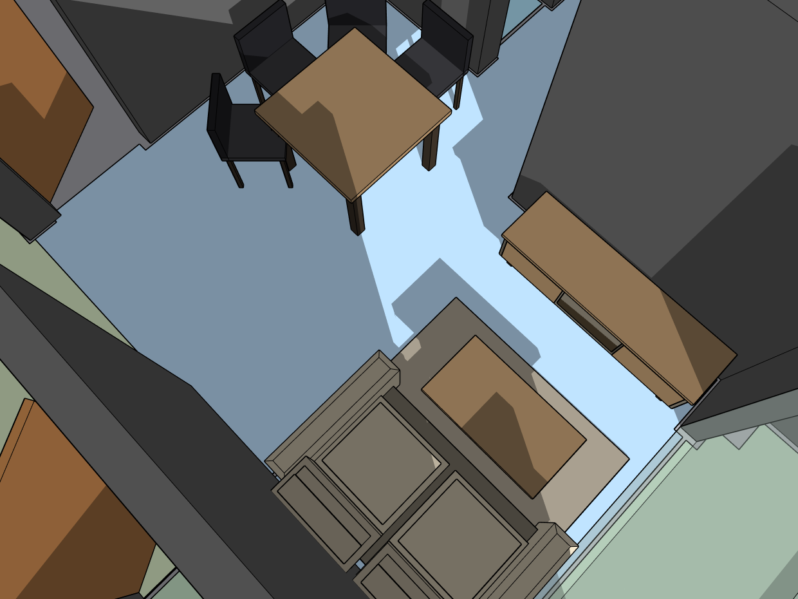

Veredito: sofá compacto 2-lug proporcional · rack planejado ANCORADO na parede · jantar 4-lug compacto com espaço · zonas estar/jantar claras · circulação livre. Layout natural -> liberado p/ black_wood_gold.
01 · SOFÁ → TV (rack ancorado + planejado)
02 · TV → SOFÁ (compacto, proporcional)
03 · JANTAR (4-lug compacto + espaço)
04 · DOLLHOUSE (zonas + circulação)